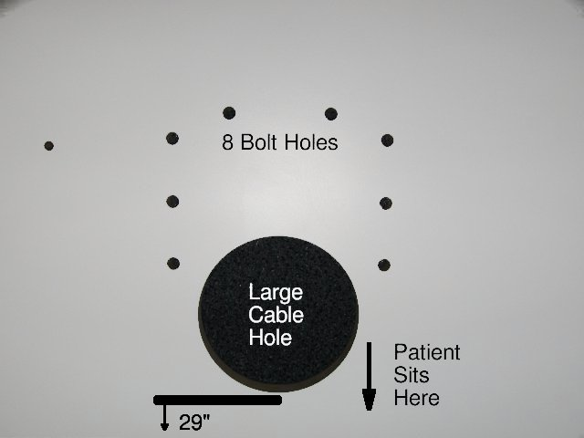
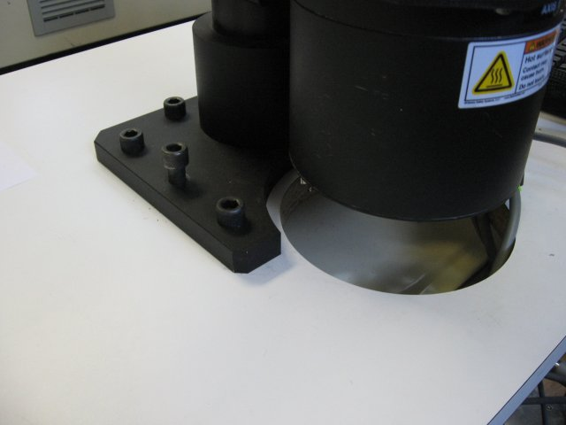
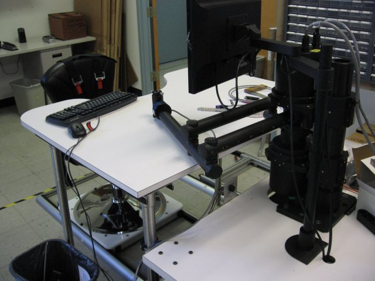

|  |
| The photo above shows bolt holes drilled using the paper template. There are 8 bolt holes and a large hole for cables. Make sure that there is 29 inches of table surface between the front of the large cable hole and the front edge of the table. |
|  |
| The photo above shows the rear section of an IMT planar workstation table. A separate taller table section sits in front of this one, providing safe and comfortable positioning for the patient. |
|  |
| The photo above shows a rear side view of a workstation table. Note that the robot is mounted on a lower rear section, and the patient chair is in front of a taller front section. |